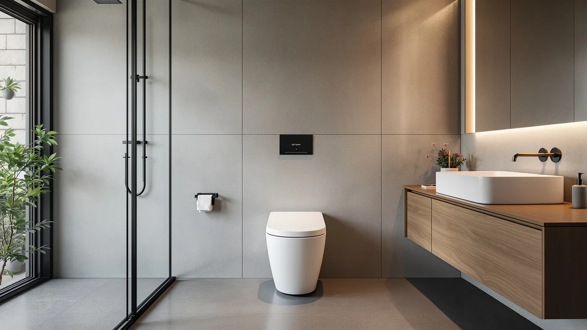

Quick Answer
The SOTOMO K-0351DF earns its spot with a 1,000g MaP flush rating, the maximum score on the scale, and an ADA-compliant 17.2-inch seat, at $274.99. If you'd rather save money, the VEVOR alternative below costs $11.18 less in a similarly compact footprint.
Our pick: SOTOMO K-0351DF Elongated One Piece, $274.99 Check Price on Amazon
Things to Know Before You Buy
- SOTOMO prices the K-0351DF Elongated One Piece at $274.99, the second-highest of the four models covered in this sotomo k 0351df elongated review.
- Its 1,000g MaP rating tops the scale, outscoring anything published by the St. Tropez, Swiss Madison Well Made Forever, or VEVOR alternatives.
- The seat sits at an ADA-compliant 17.2 inches, easing sitting and standing for seniors, pregnant users, and anyone with limited mobility.
- SOTOMO's listing doesn't state a rough-in distance, so measure your own drain before you order, unlike the three alternatives here, which publish 10 or 12 inches.
This sotomo k 0351df elongated review breaks down whether SOTOMO's $274.99 toilet earns a spot in your bathroom over the St. Tropez, Swiss Madison Well Made Forever, and VEVOR models we compare it against on this site. SOTOMO builds the K-0351DF as a skirted, one-piece elongated toilet measuring 27.75 inches deep, 14.38 inches wide, and 27.75 inches tall, and pairs it with an ADA-compliant 17.2-inch chair-height seat and a 1,000g MaP flush rating, as high as the scale goes. We pulled together everything SOTOMO publishes about this one-piece toilet, its 2-inch fully glazed trapway, and its listed price, and set it beside three direct competitors so you can see exactly where your money goes.
The short version: if you want the highest documented flush rating in this comparison along with ADA seat height, the SOTOMO is a sound pick, but it isn't the cheapest option in this group. The VEVOR undercuts it by $11.18 at $263.81, and the St. Tropez comes in $2.21 lower at $272.78, though neither matches SOTOMO's ADA-compliant seat height or its 1,000g MaP score. Pick the SOTOMO if flush power and seat height matter most to you. Pick one of the three alternatives below if price or a confirmed rough-in measurement matters more.
Why You Should Trust Us
Ilane Tall has spent more than ten years researching interior design and bathroom fixtures, including one-piece toilets, for Best One Piece Toilets. She built this sotomo k 0351df elongated review by comparing SOTOMO's own published listing against the three closest competitors on price and category, the same specification-comparison process the site uses for every review. We do not accept payment from SOTOMO, Swiss Madison, or VEVOR to influence placement, and our Amazon links earn a commission only if you buy, which does not change what we recommend.
Our Research Experience
For this sotomo k 0351df elongated review, we started with SOTOMO's own product listing: the five photos of the toilet from multiple angles, the ADA-compliant 17.2-inch seat height, the 1,000g MaP flush rating, and the $274.99 price. We then lined up the SOTOMO against the other elongated one-piece toilets already covered on Best One Piece Toilets, narrowing the field to the St. Tropez, the Swiss Madison Well Made Forever, and the VEVOR, three models that share the elongated, one-piece category and land within about $22 of SOTOMO's price. None of the four has built up a public review history yet, so we weighted our evaluation toward the facts we could verify: published price, confirmed flush rating, seat height, and rough-in specification, rather than guessing at long-term durability we cannot confirm firsthand. That gap is also why we lay out each toilet's documented specs side by side instead of ranking them on review counts that don't exist yet.
Overview & Specs
Before you compare specific picks, it helps to know what separates these four toilets at a glance. All four fall into the elongated, one-piece category and land within about $22 of each other, so the real differences come down to flush rating, seat height, and rough-in, not design category. SOTOMO leads on documented flush power with its 1,000g MaP score, while the St. Tropez and VEVOR undercut it on price. The Swiss Madison Well Made Forever sits at the top of the price range but spells out its rough-in and flush specs more clearly than SOTOMO does. Weigh flush rating, seat height, and rough-in together, since no single model in this group wins on all three.

SOTOMO K-0351DF Elongated One Piece
What we like
- ADA-compliant 17.2-inch chair-height seat eases sitting and standing for seniors, pregnant users, and anyone with limited mobility
- 1,000g MaP rating is the maximum score on the scale, the highest flush rating of any toilet in this sotomo k 0351df elongated review
- 2-inch fully glazed trapway and WaterSense certification keep the bowl clog-resistant and water-efficient without a loud flush
Flaws but not dealbreakers
- SOTOMO's listing doesn't publish a rough-in distance, so confirm the measurement with the seller before you order, unlike the three alternatives below, which state 10 or 12 inches
- Priced $11.18 higher than the VEVOR alternative in this comparison, the cheapest of the four
- No public rating or review count yet, so you're relying on SOTOMO's own published specs rather than verified buyer feedback
| Material | — |
| Size | 27.75" D x 14.38" W x 27.75" H |
SOTOMO builds the K-0351DF in white with a skirted, one-piece design, molding the tank and bowl into a single compact unit that measures 27.75 inches deep, 14.38 inches wide, and 27.75 inches tall. That footprint is small enough for space-constrained bathrooms, and the skirted sides remove the exposed trapway where grime typically collects on a standard two-piece toilet. The seat sits at an ADA-compliant 17.2 inches, a chair height SOTOMO markets toward pregnant users, seniors, and anyone with limited mobility, and the elongated bowl shape adds legroom over a round-front seat.
The flush system centers on a 2-inch fully glazed trapway paired with a MaP rating of 1,000 grams, the top mark on the scale SOTOMO cites, and the toilet carries WaterSense certification for efficiency. SOTOMO frames that combination as a quiet flush that still clears waste in a single pass. At $274.99, it costs $11.18 more than the VEVOR alternative in this comparison and $2.21 more than the St. Tropez, but neither of those two publishes a MaP score to match it. SOTOMO's listing also doesn't state a rough-in distance, so confirm that measurement with the seller before you order.
What We Liked
The SOTOMO K-0351DF's strongest selling point is its 1,000g MaP rating, the maximum score on the scale and higher than anything the St. Tropez, Swiss Madison Well Made Forever, or VEVOR publish in this comparison. Paired with the 2-inch fully glazed trapway, that rating points to a flush that clears waste in a single pass while staying WaterSense efficient. The ADA-compliant 17.2-inch seat height also stands out: it sits taller than a standard toilet, which eases sitting and standing for seniors, pregnant users, and anyone managing knee or hip pain, and none of the three alternatives below advertise a comparable seat height. At 27.75 inches deep, the skirted one-piece design keeps a compact footprint that fits smaller bathrooms without sacrificing the elongated bowl's extra legroom.
What Could Be Better
The biggest gap in this sotomo k 0351df elongated review is the missing rough-in specification. SOTOMO doesn't publish the distance from the wall to the drain center, while the St. Tropez lists 10 inches and the Swiss Madison Well Made Forever and VEVOR both list 12 inches, so you'll need to measure your own bathroom or contact SOTOMO directly before you order. Price is the other trade-off: at $274.99, SOTOMO costs $11.18 more than the VEVOR and $2.21 more than the St. Tropez, though neither matches its flush rating or seat height. SOTOMO also has not accumulated any public rating or review count for this listing, so you're relying on its own published specs rather than verified buyer feedback for now. None of that erases the ADA seat height or the 1,000g MaP score that make SOTOMO worth considering, but weigh it against the cheaper, better-documented alternatives below.
Who Is It For?
The SOTOMO K-0351DF fits buyers who care most about flush power and ADA-compliant seat height, and who have room to confirm a nonstandard rough-in before they buy. Anyone replacing a toilet in a small bathroom will also find the compact 27.75-by-14.38-inch footprint easier to work with than a bulkier one-piece design. Shopping mainly on price? The VEVOR alternative below covers similar one-piece, elongated ground for $11.18 less. And if a confirmed rough-in matters more than flush power, the Swiss Madison Well Made Forever and VEVOR both list a standard 12-inch measurement that SOTOMO's listing doesn't specify.
Alternatives to Consider
If the missing rough-in spec or the price gives you pause, these three elongated one-piece toilets cover similar ground to the SOTOMO for about the same money or less.

Editor’s Pick
St. Tropez One Piece Elongated
Swiss Madison's St. Tropez costs $2.21 less than SOTOMO and specifies a 10-inch rough-in, worth checking if your bathroom uses the shorter measurement instead of guessing at SOTOMO's unlisted spec.
$272.78
Check Price on Amazon
Best Value
Swiss Madison Well Made Forever
At $285.94, the Well Made Forever costs more than SOTOMO, but its standard 12-inch rough-in and 1.1/1.6 GPF dual flush are spelled out clearly, which SOTOMO's listing leaves out.
$285.94
Check Price on Amazon
Premium Choice
VEVOR One-Piece Toilet Elongated Toilet
The VEVOR undercuts SOTOMO by $11.18 at $263.81 and ships in a similarly compact 27.6-by-15.55-inch footprint, though its 1.0/1.28 GPF dual flush doesn't come with a published MaP score to compare against SOTOMO's 1,000g rating.
$263.81
Check Price on AmazonFrequently Asked Questions
Is the SOTOMO K-0351DF Elongated One Piece worth $274.99?
It's worth $274.99 if you want the highest documented MaP flush rating in this comparison, 1,000g, together with an ADA-compliant 17.2-inch seat. If price matters more than flush rating, the VEVOR alternative in this sotomo k 0351df elongated review saves you $11.18 at $263.81.
What rough-in does the SOTOMO K-0351DF need?
SOTOMO's listing doesn't state a rough-in distance, so measure from your finished wall to the drain center and confirm it with the seller before you order. The St. Tropez alternative in this comparison uses a 10-inch rough-in, while the Swiss Madison Well Made Forever and VEVOR both use the more common 12-inch measurement.
How does the SOTOMO compare to the St. Tropez, Swiss Madison Well Made Forever, and VEVOR?
All four toilets in this sotomo k 0351df elongated review are elongated, one-piece models priced within about $22 of each other. SOTOMO is the only one that publishes a MaP flush score, at 1,000g, alongside an ADA-compliant seat height, while the VEVOR costs the least at $263.81 and the St. Tropez uses a shorter 10-inch rough-in.
Final Verdict
This sotomo k 0351df elongated review comes down to a straightforward trade-off. SOTOMO's elongated one-piece toilet delivers the highest documented flush rating in the group, a 1,000g MaP score, alongside an ADA-compliant 17.2-inch seat, at $274.99, the second-highest price among the four models we compared, and without a published rough-in distance or the public review history that would let us confirm long-term durability firsthand. If flush power and seat height matter most to you, SOTOMO is a sound buy at that price. If you'd rather save money or need a confirmed rough-in measurement, the VEVOR and St. Tropez alternatives above are worth a look.